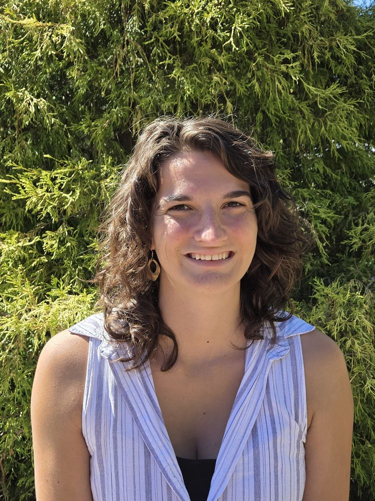

Sept 2026
Selected for the next cohort of NEON Ambassadors through the National Ecological Observatory Network's Ambassador Program.
Quantitative ecologist working in remote sensing, biodiversity, and landscape ecology
I'm a PhD candidate in Quantitative Ecology at the University of Maine. My work bridges ecology, data science, and remote sensing to understand how ecosystems respond to change across scales. I study patterns in forest structure, biodiversity, and disturbance history, asking how these layers interact to shape ecological stability and resilience.
At the heart of my research is a fascination with complexity: the way traits vary within and across species, the structural legacies left by land use and disturbance, and the spatial patterns that emerge from environmental patterns. I bring together ecological theory, machine learning, and large-scale datasets, from satellite LiDAR to insect museum specimens, to study these patterns in forests and biodiversity-rich landscapes across the U.S. and beyond.

A common thread runs through my work: scaling ecological insight from fine-grained observations (a tree crown, a single specimen) up to the continental patterns they add up to. I use fine-scale remote sensing to segment individual tree crowns and link them to forest size-abundance patterns, and I study carabid beetles in the NEON Biorepository, developing AI-powered imaging pipelines to extract functional traits at scale. By bringing together ecological theory, machine learning, and large-scale datasets, from satellite LiDAR to insect museum specimens, my work advances trait-based and structural approaches to understanding ecosystems in a rapidly changing world.
See my researchSelected for the next cohort of NEON Ambassadors through the National Ecological Observatory Network's Ambassador Program.
Accepted to co-organize and present in the symposium "Machine Learning, Collections, and You: Collections Centered AI Tools and Applications" at the Entomological Collections Network (ECN) meeting in Columbus, OH, alongside ESA's Entomology 2026 conference (November 2026).
Our work using computer vision to extract trait data from NEON ground beetle collections received the Best NEON Presentation Award at the 2026 ESA Annual Meeting. The NEON "Data in Action" feature on the project is here.
Attended FloraPalooza in Columbus, Ohio, where we worked on mapping historic land-use history from images of trees.
Delivered an invited symposium talk in Building an AI-Ready Ecology and Biodiversity Data Infrastructure for Science and Action at the ESA Annual Meeting in Salt Lake City, UT (theme: Ecology in an Era of Uncertainty).
Served as a panelist for Getting Into Graduate School and Finding the Right Program at the ESA Annual Meeting Career Central.
Attended the in-person all-author meeting for The Nature Record in Washington, DC, joining more than 100 contributing authors to work through public comments and National Academies review ahead of the final draft. The Nature Record is the first holistic assessment of U.S. lands, waters, and wildlife and the benefits they provide, launched in 2022 as the federal National Nature Assessment and carried forward independently by its authors after the federal effort ended in early 2025. I'm proud that our Chapter 8: Status, Trends, and Future Projections of Terrestrial Ecosystems in the US came through the National Academies review so strongly. The final assessment will be released online in fall 2026, with an MIT Press book to follow in 2027.
Hosted OSU computer science undergraduate Nathan Cain in Maine for a collaborative work session and his first experience with ecological field work: photos.
The symposium Building an AI-Ready Ecology and Biodiversity Data Infrastructure for Science and Action was selected as a featured presentation in ESA's media tip sheet on AI in ecology at ESA's 2026 Annual Meeting, distributed to journalists ahead of the meeting.
Coauthored paper accepted in Methods in Ecology and Evolution: ForestForTrees: an R package to infer forest structure from remote sensing data.
Passed comprehensive exams and advanced to PhD candidacy, huge thank you to my committee: Sydne Record, Brian McGill, Jacquelyn Gill, Jonathan Knott, and Angela Mech.
Presented a poster and workshopped newly developed AI tools at the first Imageomics Conference 2026 in Columbus, Ohio.
Presented the NEON Virtual Challenge and awards at the FARR RCN Workshop 2026 in Washington, DC.
Work from the National Ecological Observatory Network Virtual Challenge Hackathon was featured in the NEON Observatory Blog.
Contributed to an accepted paper at the International Conference on Learning Representations on scalable trait annotation using machine learning (paper, project page).
Featured in The New York Times coverage of the Nature Record (formerly the U.S. National Nature Assessment), where I served as a coauthor on the chapter Terrestrial Ecosystems of the United States.
ORISE work published in Conservation Biology: Comprehensive framework for assessing and optimizing existing research networks.
Aly and Sydne traveled to the NEON Biorepository to finish data collection on the NEON Carabid dataset after nine months of work.
Preliminary results from the dissertation chapter "Multimodal crown segmentation across spatial resolutions" presented at AGU 2025 in New Orleans.
Passed my PhD dissertation proposal defense: Scaling Ecological Insights.
First dissertation chapter accepted in Methods in Ecology and Evolution, presenting evidence-based protocols for computer-vision imaging of biodiversity specimens.
The HDR Machine Learning Challenge launched using a subset of Biorepository images.
The "Beyond Beetle Bodysize" team presented final results and next steps for sparse autoencoder-identified traits at the Imageomics Funcapalooza workshop in Columbus, Ohio.
"Optimizing Image Capture for Computer Vision-Powered Taxonomic Identification and Trait Recognition of Biodiversity Specimens," poster presentation at ESA.
Delivered an invited talk at the ESA Annual Meeting Career Central: Thriving in Grad School. See also Kathleen Carroll's resources developed for the original session.
Passed the chair seat to Cait Rottler at the Early Career Ecologists Section mixer at the ESA Annual Meeting in Baltimore, MD.
Accepted three section awards on behalf of the ESA Early Career Ecologists Section: Section of Merit, Innovative Leadership Structure, and Innovative Member Engagement.
Represented early-career scientists at the ESA Governing Board meeting in Baltimore, MD.
Co-organized the Imageomics Funcapalooza workshop, advancing machine-learning approaches for functional trait discovery in biodiversity science.
Joined the United By Nature Terrestrial chapter.
"Fine-Grained Taxonomy with Vision Models: A Benchmark on Long-Tailed and Domain-Adaptive Classification" accepted to CV4Animals.
Early-Career Publishing and Reviewing: Pitfalls and Perspectives published in ESA's Bulletin, a synthesis of survey results from ESA Early Career Ecologist Section members and a resulting discourse with the Editors in Chief of the ESA journals.
Implemented imaging and automated processing workflows at the NEON Biorepository in Tempe, Arizona, training staff and scaling specimen digitization for carabid beetle collections (processing pipeline).
Aly and Rayeed presented final results from the beetle-intake work at the Imageomics all-hands meeting in Columbus, Ohio.
The AI and Ecology course spent three weeks in Hawaii; the beetle-intake group imaged the entire collection of Hawaiian beetles pinned at the Pu'u Maka'ala Natural Area Reserve NEON site.
Field day assisting the bioacoustics crew, collecting SIM cards from audio recorders in kīpuka forest patches to assess variation in bird vocals by localized community divergence.
Moved back to the University of Maine, Orono, to begin my PhD in the Record Lab.
37 updates
I'm always looking for new and exciting opportunities. Let's connect.
a.east.ecology@gmail.com
ORCID: 0000-0003-1143-1255
(207) 214-3213